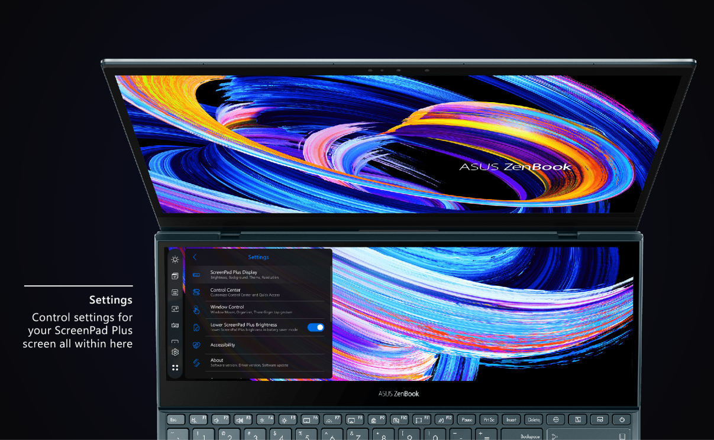
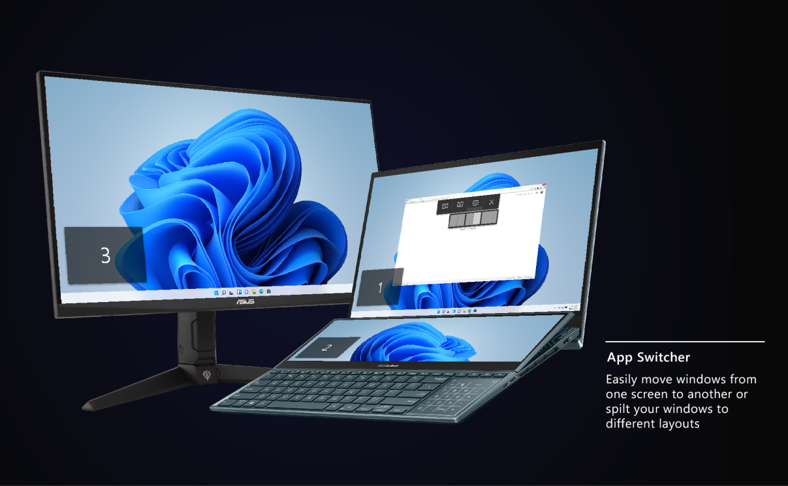
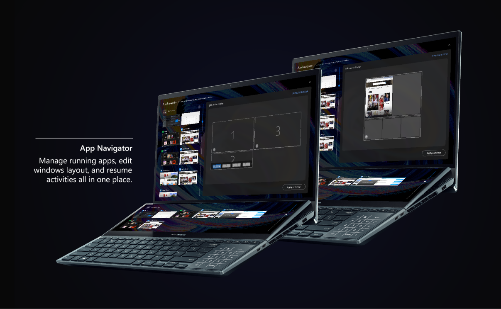
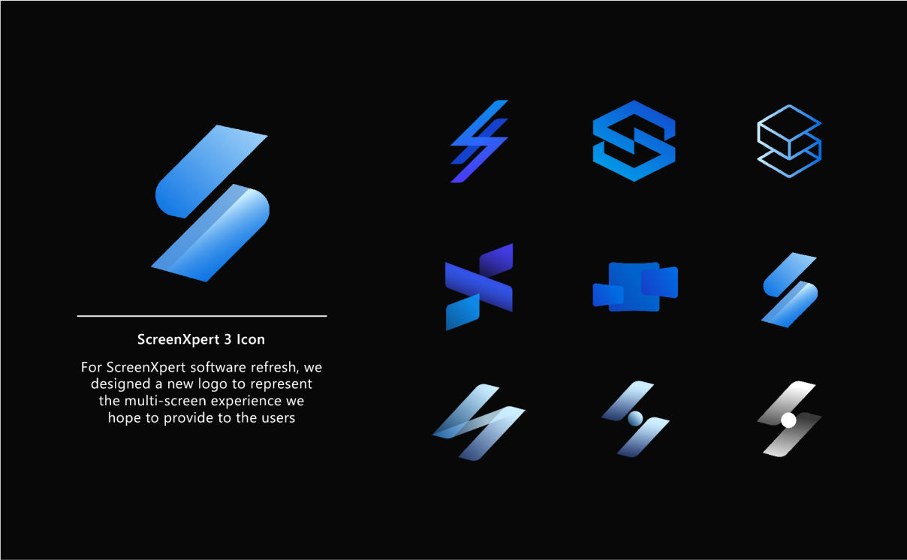
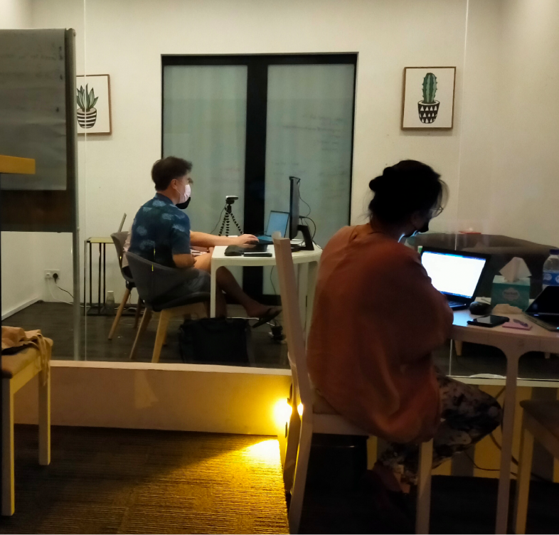
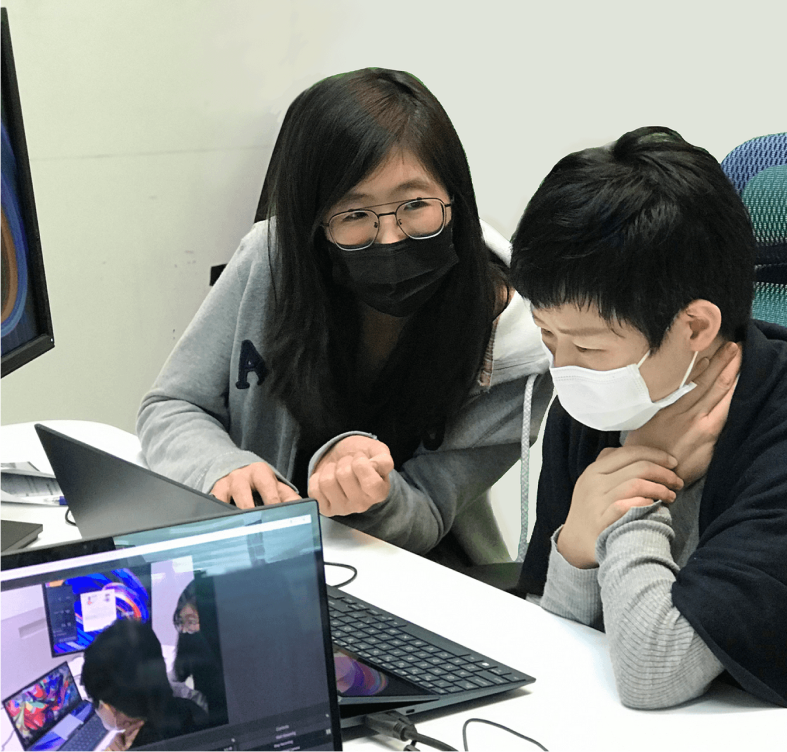
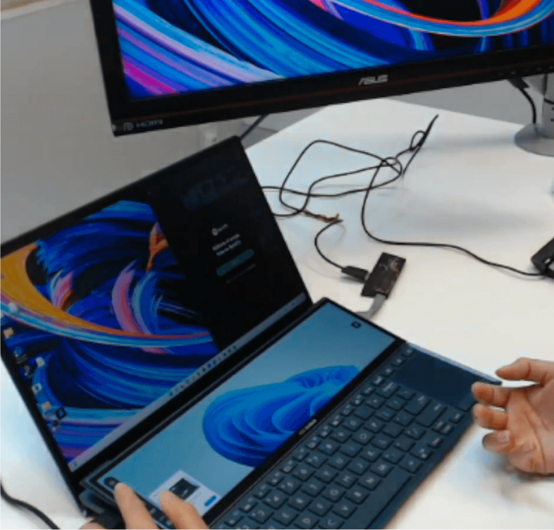
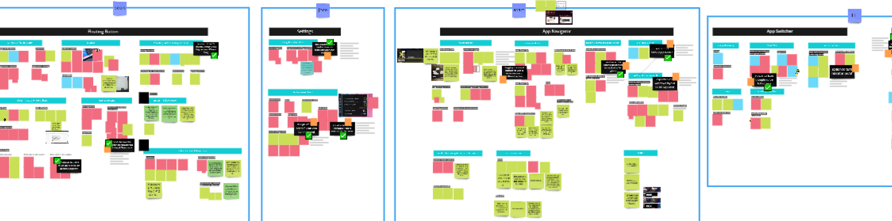
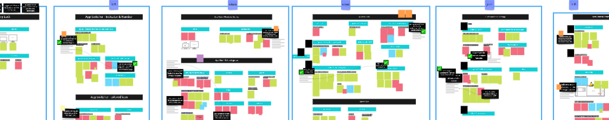

Case Study
ScreenXpert 2 / 3
ScreenXpert 3 focuses on enhancing current features for multi–screen experience. The aim is to deliver an adaptable software that can be installed into existing single-screen laptops, as well as multi-screen laptops.
ScreenXpert shipped to dual–screen laptops across three markets.
Background
ScreenXpert 3 focuses on enhancing current features for multi-screen experience. The aim is to deliver an adaptable software that can be installed into existing single-screen laptops, as well as multi-screen laptops.
Spearheaded a team, and worked closely with developers, Software Planners, Project Owner, and Marketing team, to elevate current features in ScreenXpert 2 and value-add to our users.
Contributions
- Planned and coordinated user interview with real users
- Analyzed insights to translate them to actionable points
- Pitched idea proposals to enhance and improve our current software with interactive prototypes
- Negotiated schedule and viability of our proposed ideas
- Prototyped and tested new ideas, including usability testing of the ProArt Control Panel with 20 creative professionals
- Designed and iterated user flow, wireframes, and final pixel perfect UI to deliver to our developers
- Coordinated with Marketing team to design a strong messaging and key points for launch








